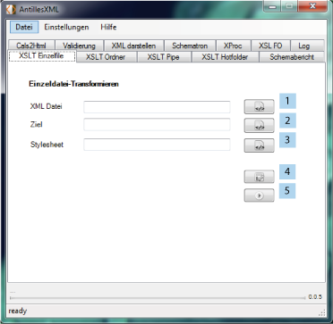

Hier werden Transformationen durchgeführt. Ein XML als auch ein XSLT Dokument
wird im Hintergrund an einen XSLT Prozessor (Saxon) übergeben und eine Ausgangsdatei
produziert.

Um eine Transformation durchführen zu können, muss dem Programm ein Eingangs-Dokument (1) und ein Stylesheet(3) übergeben werden. Unter "Ziel" (2) wird festgelegt wohin das Ergebnisdokument geschrieben werden soll. Weiterhin können die im Stylesheet hinterlegten Parameter(4) verarbeitet oder neue hinzugefügt werden. Mit dem "Ausführen" Button(5) wird die Transformation gestartet.